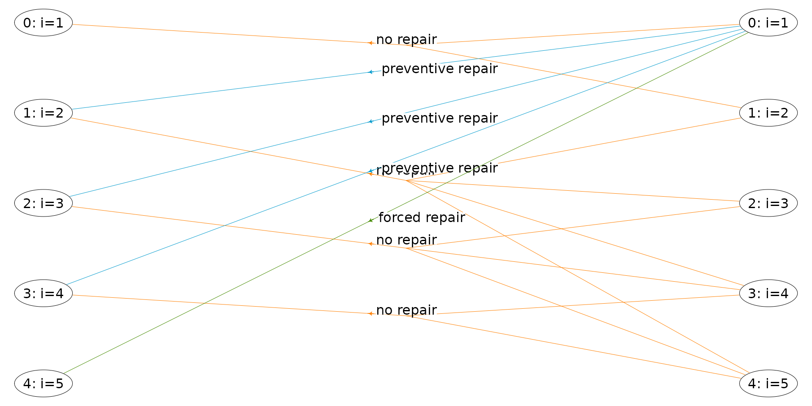
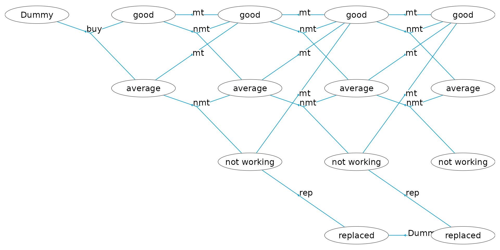
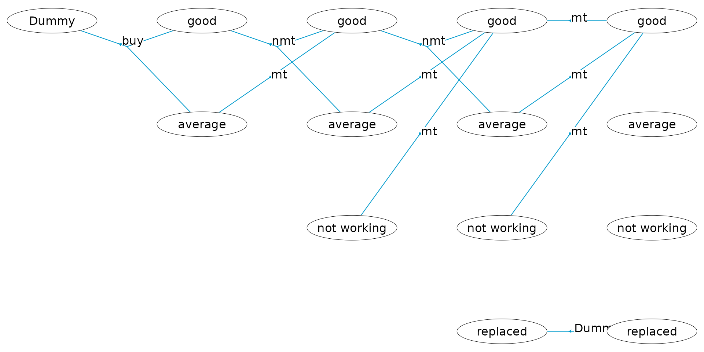
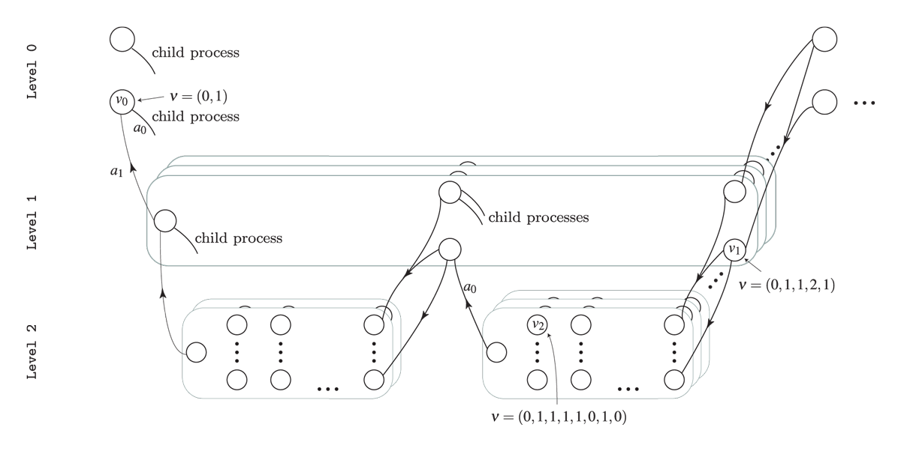
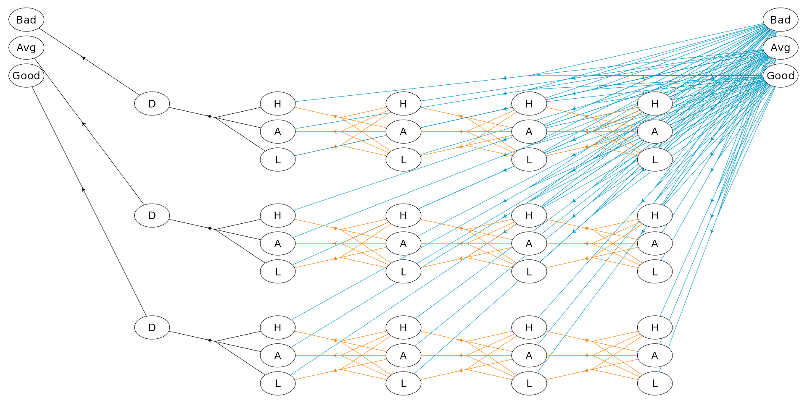
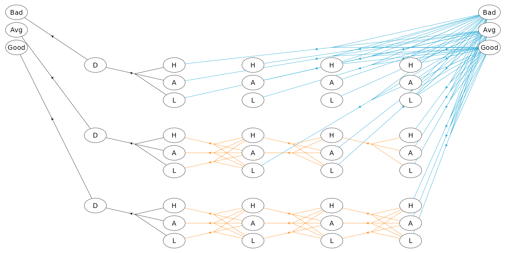

An introduction to the MDP2 package in R
Lars Relund lars@relund.dk
2022-12-07
Source:vignettes/introduction.Rmd
introduction.RmdThe MDP2 package in R is a package for solving Markov
decision processes (MDPs) with discrete time-steps, states and actions.
Both traditional MDPs (Puterman 1994),
semi-Markov decision processes (semi-MDPs) (Tijms
2003) and hierarchical-MDPs (HMDPs) (Kristensen and Jørgensen 2000) can be solved
under a finite and infinite time-horizon.
Building and solving an MDP is done in two steps. First, the MDP is built and saved in a set of binary files. Next, you load the MDP into memory from the binary files and apply various algorithms to the model.
In the package are implemented well-known algorithms such as policy
iteration and value iteration under different criteria e.g. average
reward per time unit and expected total discounted reward. The model is
stored using an underlying data structure based on the
state-expanded directed hypergraph of the MDP (Nielsen and Kristensen (2006)) implemented in
C++ for fast running times.
The newest version of the package can be installed from GitHub
> install_github("relund/mdp")We load the package using
> library(MDP2)Help about the package can be seen by writing
> ?MDP2To illustrate the package capabilities, we use a few examples, namely, an infinite and finite-horizon semi-MDP and a HMDP. Before each example a short introduction to these models are given.
An infinite Semi-MDP
An infinite-horizon semi-MDP considers a sequential decision problem over an infinite number of stages. Let \(I\) denote the finite set of system states at stage \(n\). Note we assume that the semi-MDP is homogeneous, i.e the state space is independent of stage number. When state \(i \in I\) is observed, an action \(a\) from the finite set of allowable actions \(A(i)\) must be chosen which generates reward \(r(i,a)\). Moreover, let \(\tau(i,a)\) denote the stage length of action \(a\), i.e. the expected time until the next decision epoch (stage \(n+1\)) given action \(a\) and state \(i\). Finally, let \(p_{ij}(a)\) denote the transition probability of obtaining state \(j\in I\) at stage \(n+1\) given that action \(a\) is chosen in state \(i\) at stage \(n\). A policy is a decision rule/function that assigns to each state in the process an action.
Let us consider example 6.1.1 in Tijms (2003). At the beginning of each day a piece of equipment is inspected to reveal its actual working condition. The equipment will be found in one of the working conditions \(i = 1,\ldots, N\) where the working condition \(i\) is better than the working condition \(i+1\). The equipment deteriorates in time. If the present working condition is \(i\) and no repair is done, then at the beginning of the next day the equipment has working condition \(j\) with probability \(q_{ij}\). It is assumed that \(q_{ij}=0\) for \(j<i\) and \(\sum_{j\geq i}q_{ij}=1\). The working condition \(i=N\) represents a malfunction that requires an enforced repair taking two days. For the intermediate states \(i\) with \(1<i<N\) there is a choice between preventively repairing the equipment and letting the equipment operate for the present day. A preventive repair takes only one day. A repaired system has the working condition \(i=1\). The cost of an enforced repair upon failure is \(C_{f}\) and the cost of a preemptive repair in working condition \(i\) is \(C_{p}(i)\). We wish to determine a maintenance rule which minimizes the long-run average repair cost per day.
To formulate this problem as an infinite horizon semi-MDP the set of possible states of the system is chosen as \[ I=\{1,2,\ldots,N\}. \] State \(i\) corresponds to the situation in which an inspection reveals working condition \(i\). Define actions \[ a=\left\{\begin{array}{ll} 0 & \text{if no repair.}\\ 1 & \text{if preventive repair.}\\ 2 & \text{if forced repair.}\\ \end{array}\right. \] The set of possible actions in state \(i\) is chosen as \(A(1)=\{0\},\ A(i)=\{0,1\}\) for \(1<i<N, A(N)=\{2\}\). The one-step transition probabilities \(p_{ij}(a)\) are given by \(p_{ij}(0) = q_{ij}\) for \(1\leq i<N\), \(p_{i1}(1) = 1\) for \(1<i<N\), \(p_{N1}(2)=1\) and zero otherwise. The one-step costs \(c_{i}(a)\) are given by \(c_{i}(0)=0,\ c_{i}(1)=C_{p}(i)\) and \(c_{N}(2)=C_{f}\). The stage length until next decision epoch are \(\tau(i,a) = 1, 0\leq i < N\) and \(\tau(N,a) = 2\).
Assume that the number of possible working conditions equals \(N=5\). The repair costs are given by \(C_{f}=10,\ C_{p}(2)=7,\ C_{p}(3)=7\) and \(C_{p}(4)=5\). The deterioration probabilities \(q_{ij}\) are given by
| 1 | 2 | 3 | 4 | 5 | |
|---|---|---|---|---|---|
| 1 | 0.9 | 0.1 | 0.0 | 0.00 | 0.00 |
| 2 | 0.0 | 0.8 | 0.1 | 0.05 | 0.05 |
| 3 | 0.0 | 0.0 | 0.7 | 0.10 | 0.20 |
| 4 | 0.0 | 0.0 | 0.0 | 0.50 | 0.50 |
A state-expanded hypergraph representing the semi-MDP with infinite time-horizon is shown below. Each node corresponds to a specific state in the MDP and is given the stage assigned an unique id (id must always start from zero). A directed hyperarc is defined for each possible action. For instance, the state/node with id 1 corresponds to working condition \(i=2\) and the two hyperarcs with head in this node corresponds to the two actions preventive and no repair. Note the tails of a hyperare represent a possible transition (\(p_{ij}(a)>0\)).

To build the semi-MDP in R, we use the binaryMDPWriter
where the model can be built using either matrices or an hierarchical
structure. We first illustrate how to use the hierarchical structure.
First, we load the parameters:
> N<-5; Cf<- -10; Cp<-c(0,-7,-7,-5) # use negative numbers since the MDP optimize based on rewards
> Q <- matrix(c(
> 0.90, 0.10, 0, 0, 0,
> 0, 0.80, 0.10, 0.05, 0.05,
> 0, 0, 0.70, 0.10, 0.20,
> 0, 0, 0, 0.50, 0.50), nrow=4, byrow=T) and make a data frame for the states:
> states<-data.frame(id=1:N-1,label=paste0("i=",1:N), stringsAsFactors = F)
> states id label
1 0 i=1
2 1 i=2
3 2 i=3
4 3 i=4
5 4 i=5To build the model we need transition probabilities and the state ids for the corresponding transitions. We here do this using a function:
> # transform state to id
> state2Id<-function(i) return(i-1)
>
> # input state i and action a
> transPr<-function(a,i) {
+ if (a==0) {
+ pr<-Q[i,]
+ iN<-which(pr>0)
+ pr<-pr[iN] # only consider trans pr > 0
+ }
+ if (a>0) {
+ pr<-1
+ iN<-1
+ }
+ return(list(pr=pr,id=state2Id(iN)))
+ }
> transPr(0,1)$pr
1 2
0.9 0.1
$id
1 2
0 1 We can now build the model using the
binaryMDPWriter:
> # Build the model which is stored in a set of binary files
> w<-binaryMDPWriter("hct611-1_")
> w$setWeights(c("Duration","Net reward"))
> w$process()
> w$stage()
> w$state(label="i=1")
> dat<-transPr(0,1)
> w$action(label="no repair", weights=c(1,0), pr=dat$pr, id=dat$id, end=T)
> w$endState()
> for (ii in 2:(N-1) ) {
+ w$state(label=states$label[ii])
+ dat<-transPr(0,ii)
+ w$action(label="no repair", weights=c(1,0), pr=dat$pr, id=dat$id, end=T)
+ dat<-transPr(1,ii)
+ w$action(label="preventive repair", weights=c(1,Cp[ii]), pr=dat$pr, id=dat$id, end=T)
+ w$endState()
+ }
> w$state(label=paste0("i=",N))
> dat<-transPr(2,N)
> w$action(label="forced repair", weights=c(2,Cf), pr=dat$pr, id=dat$id, end=T)
> w$endState()
> w$endStage()
> w$endProcess()
> w$closeWriter()Note that we build the model with two weights applied to each action
“Duration” and “Net reward”. That is, when we specify an action, we must
add two weights. “Duration” equals 1 day except in state \(i=N\) where a forced repair takes 2 days.
The process is built using first a process which contains a
stage (we only specify one stage, since we have a
homogeneous semi-MDP over an infinite horizon) which contains
states which contains actions. Transitions of
an action are specified using the pr and
id parameter. The model is saved in a set of files with
prefix “hct611-1_”.
The model can be loaded using
> mdp<-loadMDP("hct611-1_")Read binary files (0.000142001 sec.)
Build the HMDP (3.6401e-05 sec.)Checking MDP and found no errors (2.1e-06 sec.)> mdp # overall info$binNames
[1] "hct611-1_stateIdx.bin" "hct611-1_stateIdxLbl.bin"
[3] "hct611-1_actionIdx.bin" "hct611-1_actionIdxLbl.bin"
[5] "hct611-1_actionWeight.bin" "hct611-1_actionWeightLbl.bin"
[7] "hct611-1_transProb.bin" "hct611-1_externalProcesses.bin"
$timeHorizon
[1] Inf
$states
[1] 5
$founderStatesLast
[1] 5
$actions
[1] 8
$levels
[1] 1
$weightNames
[1] "Duration" "Net reward"
$ptr
C++ object <0x55dec67b82a0> of class 'HMDP' <0x55dec5bc8370>
attr(,"class")
[1] "MDP:C++"> info<-infoMDP(mdp) # more detailed info
> info$actionDF sId aIdx label weights trans pr
1 5 0 no repair 1,0 0,1 0.9,0.1
2 6 0 no repair 1,0 1,2,3,4 0.8,0.1,0.05,0.05
3 6 1 preventive repair 1,-7 0 1
4 7 0 no repair 1,0 2,3,4 0.7,0.1,0.2
5 7 1 preventive repair 1,-7 0 1
6 8 0 no repair 1,0 3,4 0.5,0.5
7 8 1 preventive repair 1,-5 0 1
8 9 0 forced repair 2,-10 0 1> info$stateDF sId stateStr label
1 0 1,0
2 1 1,1
3 2 1,2
4 3 1,3
5 4 1,4
6 5 0,0 i=1
7 6 0,1 i=2
8 7 0,2 i=3
9 8 0,3 i=4
10 9 0,4 i=5Note the loaded model gives each node in the state-expanded hypergraph a unique id such that you can identify all the states. These ids are not equal to the ids used when you built the model, since the order of the nodes in the hypergraph data structure is optimized! Given the model in memory, we now can find the optimal policy under various policies. Let us first try to optimize the average reward per time unit.
> # Optimal policy under average reward per time unit criterion
> policyIteAve(mdp,"Net reward","Duration")Run policy iteration under average reward criterion using
reward 'Net reward' over 'Duration'. Iterations (g):
1 (-0.512821) 2 (-0.446154) 3 (-0.43379) 4 (-0.43379) finished. Cpu time: 2.1e-06 sec.[1] -0.43379> getPolicy(mdp) sId stateLabel aIdx actionLabel weight
1 5 i=1 0 no repair 9.132420
2 6 i=2 0 no repair 4.794521
3 7 i=3 0 no repair 2.968037
4 8 i=4 1 preventive repair 4.566210
5 9 i=5 0 forced repair 0.000000Note it is optimal to do a preventive repair in state \(i=4\). Let us try to optimize the expected total discounted reward using both policy iteration and value iteration.
> # Optimal policy under expected discounted reward criterion (use both policy and value ite)
> policyIteDiscount(mdp,"Net reward","Duration", discountFactor = 0.5)Run policy iteration using quantity 'Net reward' under discounting criterion
with 'Duration' as duration using discount factor 0.5.
Iteration(s): 1 2 finished. Cpu time: 2.1e-06 sec.> getPolicy(mdp) sId stateLabel aIdx actionLabel weight
1 5 i=1 0 no repair -0.06420546
2 6 i=2 0 no repair -0.70626003
3 7 i=3 0 no repair -1.79775281
4 8 i=4 0 no repair -3.33868379
5 9 i=5 0 forced repair -10.01605136> valueIte(mdp,"Net reward","Duration", discountFactor = 0.5, eps = 1e-10, maxIte = 1000)Run value iteration with epsilon = 1e-10 at most 1000 time(s)
using quantity 'Net reward' under expected discounted reward criterion
with 'Duration' as duration using discount factor 0.5.
Iterations: 33 Finished. Cpu time 2.69e-05 sec.> getPolicy(mdp) sId stateLabel aIdx actionLabel weight
1 5 i=1 0 no repair -0.06420546
2 6 i=2 0 no repair -0.70626003
3 7 i=3 0 no repair -1.79775281
4 8 i=4 0 no repair -3.33868379
5 9 i=5 0 forced repair -10.01605136Note given a discount factor of 0.5, it is optimal to not do a preventive repair in state \(i=4\).
The model can also be built by specifying a set of matrices. Note this way of specifying only work for infinite-horizon semi-MDPs (and not finite-horizon or hierarchical models). Specify a list of probability matrices (one for each action) where each row/state contains the transition probabilities (all zero if the action is not used in a state), a matrix with rewards and a matrix with stage lengths (row = state, column = action). Let us try to build and solve the model again.
> ## define probability matrices
> P<-list()
> # a=1 (no repair)
> P[[1]]<-as.matrix(rbind(Q,0))
> # a=2 (preventive repair)
> Z <- matrix(0, nrow = N, ncol = N)
> Z[2,1]<-Z[3,1]<-Z[4,1]<-1
> P[[2]]<-Z
> # a=3 (forced repair)
> Z <- matrix(0, nrow = N, ncol = N)
> Z[5,1]<-1
> P[[3]]<-Z
> # reward 6x3 matrix with one column for each action
> R <- matrix(0, nrow = N, ncol = 3)
> R[2:4,2]<-Cp[2:4]
> R[5,3]<-Cf
> # state lengths
> D <- matrix(1, nrow = N, ncol = 3)
> D[5,3]<-2
>
> # build model
> w<-binaryMDPWriter("hct611-2_")
> w$setWeights(c("Duration","Net reward"))
> w$process(P,R,D)
> w$closeWriter()
Statistics:
states : 5
actions: 8
weights: 2
Closing binary MDP writer.> mdp<-loadMDP("hct611-2_")Read binary files (0.000161701 sec.)
Build the HMDP (3.44e-05 sec.)Checking MDP and found no errors (1.6e-06 sec.)> policyIteAve(mdp,"Net reward","Duration")Run policy iteration under average reward criterion using
reward 'Net reward' over 'Duration'. Iterations (g):
1 (-0.512821) 2 (-0.446154) 3 (-0.43379) 4 (-0.43379) finished. Cpu time: 1.6e-06 sec.[1] -0.43379> getPolicy(mdp) sId stateLabel aIdx actionLabel weight
1 5 1 0 1 9.132420
2 6 2 0 1 4.794521
3 7 3 0 1 2.968037
4 8 4 1 2 4.566210
5 9 5 0 3 0.000000A finite-horizon Semi-MDP
A finite-horizon semi-MDP considers a sequential decision problem over \(N\) stages. Let \(I_{n}\) denote the finite set of system states at stage \(n\). When state \(i \in I_{n}\) is observed, an action \(a\) from the finite set of allowable actions \(A_n(i)\) must be chosen, and this decision generates reward \(r_{n}(i,a)\). Moreover, let \(\tau_n(i,a)\) denote the stage length of action \(a\), i.e. the expected time until the next decision epoch (stage \(n+1\)) given action \(a\) and state \(i\). Finally, let \(p_{ij}(a,n)\) denote the transition probability of obtaining state \(j\in I_{n+1}\) at stage \(n+1\) given that action \(a\) is chosen in state \(i\) at stage \(n\).
Consider a small machine repair problem used as an example in Nielsen and Kristensen (2006) where the machine is always replaced after 4 years. The state of the machine may be: good, average, and not working. Given the machine’s state we may maintain the machine. In this case the machine’s state will be good at the next decision epoch. Otherwise, the machine’s state will not be better at next decision epoch. When the machine is bought it may be either in state good or average. Moreover, if the machine is not working it must be replaced.
The problem of when to replace the machine can be modelled using a
Markov decision process with \(N=5\)
decision epochs. We use system states good,
average, not working and dummy state
replaced together with actions buy (buy),
maintain (mt), no maintenance (nmt), and
replace (rep). The set of states at stage zero \(S_{0}\) contains a single dummy state
dummy representing the machine before knowing its initial
state. The only possible action is buy.
The cost of buying the machine is 100 with transition probability of
0.7 to state good and 0.3 to state average.
The reward (scrap value) of replacing a machine is 30, 10, and 5 in
state good, average and
not working, respectively. The reward of the machine given
action mt are 55, 40, and 30 in state good,
average and not working, respectively.
Moreover, the system enters state 0 with probability 1 at the next
stage. Finally, the reward, transition states and probabilities given
action \(a=\)nmt are given
by:
| \(n:s\) |
\(1:\)
good
|
\(1:\)
average
|
\(2:\)
good
|
\(2:\)
average
|
\(3:\)
good
|
\(3:\)
average
|
|---|---|---|---|---|---|---|
| \(r_n(i,a)\) | 70 | 50 | 70 | 50 | 70 | 50 |
| \(j\) | \(\{0,1\}\) | \(\{1,2\}\) | \(\{0,1\}\) | \(\{1,2\}\) | \(\{0,1\}\) | \(\{1,2\}\) |
| \(p_{ij}(a,n)\) | \(\{0.6,0.4\}\) | \(\{0.6,0.4\}\) | \(\{0.5,0.5\}\) | \(\{0.5,0.5\}\) | \(\{0.2,0.8\}\) | \(\{0.2,0.8\}\) |
The semi-MDP with time-horizon \(N=5\) is illustrated below. Each node
corresponds to a specific state and a directed hyperarc is defined for
each possible action. For instance, action mt (maintain)
corresponds to a deterministic transition to state good and
action nmt (not maintain) corresponds to a transition to a
condition/state not better than the current condition/state. We buy the
machine in stage 1 and may choose to replace the machine.

We build the semi-MDP using binaryMDPWriter:
> prefix<-"machine1_"
> w <- binaryMDPWriter(prefix)
> w$setWeights(c("Net reward"))
> w$process()
> w$stage() # stage n=0
> w$state(label="Dummy")
> w$action(label="buy", weights=-100, pr=c(0.7,0.3), id=c(0,1), end=TRUE)
> w$endState()
> w$endStage()
> w$stage() # stage n=1
> w$state(label="good")
> w$action(label="mt", weights=55, pr=1, id=0, end=TRUE)
> w$action(label="nmt", weights=70, pr=c(0.6,0.4), id=c(0,1), end=TRUE)
> w$endState()
> w$state(label="average")
> w$action(label="mt", weights=40, pr=1, id=0, end=TRUE)
> w$action(label="nmt", weights=50, pr=c(0.6,0.4), id=c(1,2), end=TRUE)
> w$endState()
> w$endStage()
> w$stage() # stage n=2
> w$state(label="good")
> w$action(label="mt", weights=55, pr=1, id=0, end=TRUE)
> w$action(label="nmt", weights=70, pr=c(0.5,0.5), id=c(0,1), end=TRUE)
> w$endState()
> w$state(label="average")
> w$action(label="mt", weights=40, pr=1, id=0, end=TRUE)
> w$action(label="nmt", weights=50, pr=c(0.5,0.5), id=c(1,2), end=TRUE)
> w$endState()
> w$state(label="not working")
> w$action(label="mt", weights=30, pr=1, id=0, end=TRUE)
> w$action(label="rep", weights=5, pr=1, id=3, end=TRUE)
> w$endState()
> w$endStage()
> w$stage() # stage n=3
> w$state(label="good")
> w$action(label="mt", weights=55, pr=1, id=0, end=TRUE)
> w$action(label="nmt", weights=70, pr=c(0.2,0.8), id=c(0,1), end=TRUE)
> w$endState()
> w$state(label="average")
> w$action(label="mt", weights=40, pr=1, id=0, end=TRUE)
> w$action(label="nmt", weights=50, pr=c(0.2,0.8), id=c(1,2), end=TRUE)
> w$endState()
> w$state(label="not working")
> w$action(label="mt", weights=30, pr=1, id=0, end=TRUE)
> w$action(label="rep", weights=5, pr=1, id=3, end=TRUE)
> w$endState()
> w$state(label="replaced")
> w$action(label="Dummy", weights=0, pr=1, id=3, end=TRUE)
> w$endState()
> w$endStage()
> w$stage() # stage n=4
> w$state(label="good", end=TRUE)
> w$state(label="average", end=TRUE)
> w$state(label="not working", end=TRUE)
> w$state(label="replaced", end=TRUE)
> w$endStage()
> w$endProcess()
> w$closeWriter()Note that at each stage the states are numbered using id’s starting
from zero such that e.g.
w$action(label="nmt", weights=50, pr=c(0.2,0.8), id=c(1,2), end=TRUE)
define an action with transition to states with id’s 1 and 2 at the next
stage with probability 0.2 and 0.8, respectively.
Let us try to load the model and get some info:
> mdp<-loadMDP("machine1_")Read binary files (0.000180401 sec.)
Build the HMDP (5.1501e-05 sec.)Checking MDP and found no errors (1.4e-06 sec.)> mdp # overall info$binNames
[1] "machine1_stateIdx.bin" "machine1_stateIdxLbl.bin"
[3] "machine1_actionIdx.bin" "machine1_actionIdxLbl.bin"
[5] "machine1_actionWeight.bin" "machine1_actionWeightLbl.bin"
[7] "machine1_transProb.bin" "machine1_externalProcesses.bin"
$timeHorizon
[1] 5
$states
[1] 14
$founderStatesLast
[1] 4
$actions
[1] 18
$levels
[1] 1
$weightNames
[1] "Net reward"
$ptr
C++ object <0x55dec375ae50> of class 'HMDP' <0x55dec5bc8370>
attr(,"class")
[1] "MDP:C++"> info<-infoMDP(mdp) # more detailed info
> info$actionDF sId aIdx label weights trans pr
1 4 0 mt 55 0 1
2 4 1 nmt 70 0,1 0.2,0.8
3 5 0 mt 40 0 1
4 5 1 nmt 50 1,2 0.2,0.8
5 6 0 mt 30 0 1
6 6 1 rep 5 3 1
7 7 0 Dummy 0 3 1
8 8 0 mt 55 4 1
9 8 1 nmt 70 4,5 0.5,0.5
10 9 0 mt 40 4 1
11 9 1 nmt 50 5,6 0.5,0.5
12 10 0 mt 30 4 1
13 10 1 rep 5 7 1
14 11 0 mt 55 8 1
15 11 1 nmt 70 8,9 0.6,0.4
16 12 0 mt 40 8 1
17 12 1 nmt 50 9,10 0.6,0.4
18 13 0 buy -100 11,12 0.7,0.3> info$stateDF sId stateStr label
1 0 4,0 good
2 1 4,1 average
3 2 4,2 not working
4 3 4,3 replaced
5 4 3,0 good
6 5 3,1 average
7 6 3,2 not working
8 7 3,3 replaced
9 8 2,0 good
10 9 2,1 average
11 10 2,2 not working
12 11 1,0 good
13 12 1,1 average
14 13 0,0 DummyLet us use value iteration to find the optimal policy maximizing the expected total reward under the assumption that terminal values are 30,10,5,0.
> scrapValues<-c(30,10,5,0) # scrap values (the values of the 4 states at stage 4)
> valueIte(mdp, "Net reward" , termValues=scrapValues)Run value iteration with epsilon = 0 at most 1 time(s)
using quantity 'Net reward' under reward criterion.
Finished. Cpu time 1.36e-05 sec.> getPolicy(mdp) sId stateLabel aIdx actionLabel weight
1 0 good -1 30.0
2 1 average -1 10.0
3 2 not working -1 5.0
4 3 replaced -1 0.0
5 4 good 0 mt 85.0
6 5 average 0 mt 70.0
7 6 not working 0 mt 60.0
8 7 replaced 0 Dummy 0.0
9 8 good 1 nmt 147.5
10 9 average 0 mt 125.0
11 10 not working 0 mt 115.0
12 11 good 1 nmt 208.5
13 12 average 0 mt 187.5
14 13 Dummy 0 buy 102.2The optimal policy is illustrated below:

Note given the optimal policy the machine will never make a
transition to states not working and replaced.
We may evaluate a certain policy, e.g. the policy always to maintain the
machine:
> policy<-data.frame(sId=c(8,11),aIdx=c(0,0))
> setPolicy(mdp, policy)
> getPolicy(mdp) sId stateLabel aIdx actionLabel weight
1 0 good -1 30.0
2 1 average -1 10.0
3 2 not working -1 5.0
4 3 replaced -1 0.0
5 4 good 0 mt 85.0
6 5 average 0 mt 70.0
7 6 not working 0 mt 60.0
8 7 replaced 0 Dummy 0.0
9 8 good 0 mt 147.5
10 9 average 0 mt 125.0
11 10 not working 0 mt 115.0
12 11 good 0 mt 208.5
13 12 average 0 mt 187.5
14 13 Dummy 0 buy 102.2If the policy specified in setPolicy does not contain
all states then the actions from the previous optimal policy are used.
In the output above we can see that the policy now is to maintain
always. However, the reward of the policy has not been updated. Let us
calculate the expected reward:
> calcWeights(mdp, "Net reward", termValues=scrapValues)
> getPolicy(mdp) sId stateLabel aIdx actionLabel weight
1 0 good -1 30.0
2 1 average -1 10.0
3 2 not working -1 5.0
4 3 replaced -1 0.0
5 4 good 0 mt 85.0
6 5 average 0 mt 70.0
7 6 not working 0 mt 60.0
8 7 replaced 0 Dummy 0.0
9 8 good 0 mt 140.0
10 9 average 0 mt 125.0
11 10 not working 0 mt 115.0
12 11 good 0 mt 195.0
13 12 average 0 mt 180.0
14 13 Dummy 0 buy 90.5That is, the expected reward is 90.5 compared to 102.2 which was the reward of the optimal policy.
An infinite-horizon HMDP
A hierarchical MDP is an MDP with parameters defined in a special
way, but nevertheless in accordance with all usual rules and conditions
relating to such processes (Kristensen and
Jørgensen (2000)). The basic idea of the hierarchical structure
is that stages of the process can be expanded to a so-called child
process, which again may expand stages further to new child
processes leading to multiple levels. To illustrate consider the HMDP
shown in the figure below. The process has three levels. At
Level 2 we have a set of finite-horizon semi-MDPs (one for
each oval box) which all can be represented using a state-expanded
hypergraph (hyperarcs not shown, only hyperarcs connecting processes are
shown). A semi-MDP at Level 2 is uniquely defined by a
given state \(s\) and action \(a\) of its parent process at
Level 1 (illustrated by the arcs with head and tail node at
Level 1 and Level 2, respectively). Moreover,
when a child process at Level 2 terminates a transition
from a state \(s\in \mathcal{S}_{N}\)
of the child process to a state at the next stage of the parent process
occur (illustrated by the (hyper)arcs having head and tail at
Level 2 and Level 1, respectively).
A hypergraph representation of the first stage of a hierarchical MDP. Level 0 indicate the founder level, and the nodes indicates states at the different levels. A child process (oval box) is represented using its state-expanded hypergraph (hyperarcs not shown) and is uniquely defined by a given state and action of its parent process.
Since a child process is always defined by a stage, state and action of the parent process we have that for instance a state at Level 1 can be identified using an index vector \(\nu=(n_{0},s_{0},a_{0},n_{1},s_{1})\) where \(s_1\) is the state id at the given stage \(n_1\) in the process defined by the action \(a_0\) in state \(s_0\) at stage \(n_0\). Note all values are ids starting from zero, e.g. if \(s_1=0\) it is the first state at the corresponding stage and if \(a_0=2\) it is the third action at the corresponding state. In general a state \(s\) and action \(a\) at level \(l\) can be uniquely identified using \[ \begin{aligned} \nu_{s}&=(n_{0},s_{0},a_{0},n_{1},s_{1},\ldots,n_{l},s_{l}) \\ \nu_{a}&=(n_{0},s_{0},a_{0},n_{1},s_{1},\ldots,n_{l},s_{l},a_{l}). \end{aligned} \] The index vectors for state \(v_0\), \(v_1\) and \(v_2\) are illustrated in the figure. As under a semi-MDP another way to identify a state in the state-expanded hypergraph is using an unique id.
Let us try to solve a small problem from livestock farming, namely the cow replacement problem where we want to represent the age of the cow, i.e. the lactation number of the cow. During a lactation a cow may have a high, average or low yield. We assume that a cow is always replaced after 4 lactations.
In addition to lactation and milk yield we also want to take the genetic merit into account which is either bad, average or good. When a cow is replaced we assume that the probability of a bad, average or good heifer is equal.
We formulate the problem as a HMDP with 2 levels. At level 0 the
states are the genetic merit and the length of a stage is a life of a
cow. At level 1 a stage describe a lactation and states describe the
yield. Decisions at level 1 are keep or
replace.
Note the MDP runs over an infinite time-horizon at the founder level where each state (genetic merit) define a semi-MDP at level 1 with 4 lactations.
To generate the MDP we need to know the weights and transition probabilities which are provided in a csv file. To ease the understanding we provide 2 functions for reading from the csv:
> cowDf<-read.csv("vignette_files/cow.csv")
> head(cowDf) s0 n1 s1 label Duration Reward Output scp0 idx0 pr0 scp1 idx1 pr1 scp2
1 0 0 0 Dummy 0 0 0 1 0 0.3333333 1 1 0.3333333 1
2 0 1 0 Keep 1 6000 3000 1 0 0.6000000 1 1 0.3000000 1
3 0 1 0 Replace 1 5000 3000 0 0 0.3333333 0 1 0.3333333 0
4 0 1 1 Keep 1 8000 4000 1 0 0.2000000 1 1 0.6000000 1
5 0 1 1 Replace 1 7000 4000 0 0 0.3333333 0 1 0.3333333 0
6 0 1 2 Keep 1 10000 5000 1 0 0.1000000 1 1 0.3000000 1
idx2 pr2
1 2 0.3333333
2 2 0.1000000
3 2 0.3333333
4 2 0.2000000
5 2 0.3333333
6 2 0.6000000> lev1W<-function(s0Idx,n1Idx,s1Idx,a1Lbl) {
+ r<-subset(cowDf,s0==s0Idx & n1==n1Idx & s1==s1Idx & label==a1Lbl)
+ return(as.numeric(r[5:7]))
+ }
> lev1W(2,2,1,'Keep') # good genetic merit, lactation 2, avg yield, keep action[1] 1 14000 7000> lev1Pr<-function(s0Idx,n1Idx,s1Idx,a1Lbl) {
+ r<-subset(cowDf,s0==s0Idx & n1==n1Idx & s1==s1Idx & label==a1Lbl)
+ return(as.numeric(r[8:16]))
+ }
> lev1Pr(2,2,1,'Replace') # good genetic merit, lactation 2, avg yield, replace action[1] 0.0000000 0.0000000 0.3333333 0.0000000 1.0000000 0.3333333 0.0000000 2.0000000
[9] 0.3333333We can now generate the model with three weights
> lblS0<-c('Bad genetic level','Avg genetic level','Good genetic level')
> lblS1<-c('Low yield','Avg yield','High yield')
> prefix<-"cow_"
> w<-binaryMDPWriter(prefix)
> w$setWeights(c("Duration", "Net reward", "Yield"))
> w$process()
> w$stage() # stage 0 at founder level
> for (s0 in 0:2) {
+ w$state(label=lblS0[s0+1]) # state at founder
+ w$action(label="Keep", weights=c(0,0,0), prob=c(2,0,1)) # action at founder
+ w$process()
+ w$stage() # dummy stage at level 1
+ w$state(label="Dummy")
+ w$action(label="Dummy", weights=c(0,0,0),
+ prob=c(1,0,1/3, 1,1,1/3, 1,2,1/3), end=TRUE)
+ w$endState()
+ w$endStage()
+ for (d1 in 1:4) {
+ w$stage() # stage at level 1
+ for (s1 in 0:2) {
+ w$state(label=lblS1[s1+1])
+ if (d1!=4) {
+ w$action(label="Keep", weights=lev1W(s0,d1,s1,"Keep"),
+ prob=lev1Pr(s0,d1,s1,"Keep"), end=TRUE)
+ }
+ w$action(label="Replace", weights=lev1W(s0,d1,s1,"Replace"),
+ prob=lev1Pr(s0,d1,s1,"Replace"), end=TRUE)
+ w$endState()
+ }
+ w$endStage()
+ }
+ w$endProcess()
+ w$endAction()
+ w$endState()
+ }
> w$endStage()
> w$endProcess()
> w$closeWriter()
Statistics:
states : 42
actions: 69
weights: 3
Closing binary MDP writer.Note that the model is built using the prob parameter
which contains triples of (scope,id,pr). Scope can be: 2 = a transition
to a child process (stage zero in the child process), 1 = a transition
to next stage in the current process and 0 = a transition to the next
stage in the father process. For instance if
prob = c(1,2,0.3, 0,0,0.7) we specify transitions to the
third state (id = 2) at the next stage of the process and to the first
state (id = 0) at the next stage of the father process with
probabilities 0.3 and 0.7, respectively.
A plot of the state-expanded hypergraph are given below where action
keep is drawn with orange color and action
replace with blue color.

We find the optimal policy under the expected discounted reward criterion the HMDP using policy iteration:
> ## solve under discount criterion
> mdp<-loadMDP(prefix)Read binary files (0.000288902 sec.)
Build the HMDP (0.000299403 sec.)Checking MDP and found no errors (3.7e-06 sec.)> wLbl<-"Net reward" # the weight we want to optimize (net reward)
> durLbl<-"Duration" # the duration/time label
> policyIteDiscount(mdp, wLbl, durLbl, rate=0.1)Run policy iteration using quantity 'Net reward' under discounting criterion
with 'Duration' as duration using discount factor 0.904837.
Iteration(s): 1 2 3 4 finished. Cpu time: 3.7e-06 sec.> getPolicy(mdp) sId stateLabel aIdx actionLabel weight
1 3 Low yield 0 Replace 118594.1
2 4 Avg yield 0 Replace 120594.1
3 5 High yield 0 Replace 122594.1
4 6 Low yield 0 Keep 120213.2
5 7 Avg yield 0 Keep 123118.1
6 8 High yield 0 Keep 126022.9
7 9 Low yield 0 Keep 122087.6
8 10 Avg yield 0 Keep 125401.8
9 11 High yield 0 Keep 128716.0
10 12 Low yield 0 Keep 121968.9
11 13 Avg yield 0 Keep 125468.3
12 14 High yield 0 Keep 128967.7
13 15 Dummy 0 Dummy 125468.3
14 16 Low yield 0 Replace 116594.1
15 17 Avg yield 0 Replace 118594.1
16 18 High yield 0 Replace 120594.1
17 19 Low yield 1 Replace 117594.1
18 20 Avg yield 1 Replace 119594.1
19 21 High yield 0 Keep 122213.2
20 22 Low yield 1 Replace 117594.1
21 23 Avg yield 0 Keep 120325.3
22 24 High yield 0 Keep 123454.2
23 25 Low yield 0 Keep 115675.2
24 26 Avg yield 0 Keep 118946.8
25 27 High yield 0 Keep 122326.4
26 28 Dummy 0 Dummy 118982.8
27 29 Low yield 0 Replace 114594.1
28 30 Avg yield 0 Replace 116594.1
29 31 High yield 0 Replace 118594.1
30 32 Low yield 1 Replace 115594.1
31 33 Avg yield 1 Replace 117594.1
32 34 High yield 1 Replace 119594.1
33 35 Low yield 1 Replace 115594.1
34 36 Avg yield 1 Replace 117594.1
35 37 High yield 1 Replace 119594.1
36 38 Low yield 1 Replace 113594.1
37 39 Avg yield 1 Replace 115594.1
38 40 High yield 1 Replace 117594.1
39 41 Dummy 0 Dummy 115594.1
40 42 Bad genetic level 0 Keep 115594.1
41 43 Avg genetic level 0 Keep 118982.8
42 44 Good genetic level 0 Keep 125468.3> # rpo<-calcRPO(mdp, wLbl, iA=rep(0,42), criterion="discount", dur=durLbl, rate=rate, rateBase=rateBase)
> # policy<-merge(policy,rpo)
> # policyA plot of the optimal policy can be seen below.

We may also find the policy with maximizing average reward per lactation:
> wLbl<-"Net reward" # the weight we want to optimize (net reward)
> durLbl<-"Duration" # the duration/time label
> policyIteAve(mdp, wLbl, durLbl)Run policy iteration under average reward criterion using
reward 'Net reward' over 'Duration'. Iterations (g):
1 (11000) 2 (11517.5) 3 (11543.8) 4 (11543.8) finished. Cpu time: 3.7e-06 sec.[1] 11543.83> getPolicy(mdp) sId stateLabel aIdx actionLabel weight
1 3 Low yield 0 Replace -7.368515e+03
2 4 Avg yield 0 Replace -5.368515e+03
3 5 High yield 0 Replace -3.368515e+03
4 6 Low yield 0 Keep -5.912343e+03
5 7 Avg yield 0 Keep -2.912343e+03
6 8 High yield 0 Keep 8.765653e+01
7 9 Low yield 0 Keep -3.956172e+03
8 10 Avg yield 0 Keep -4.561717e+02
9 11 High yield 0 Keep 3.043828e+03
10 12 Low yield 0 Keep -3.750000e+03
11 13 Avg yield 0 Keep 7.958079e-13
12 14 High yield 0 Keep 3.750000e+03
13 15 Dummy 0 Dummy 9.094947e-13
14 16 Low yield 0 Replace -9.368515e+03
15 17 Avg yield 0 Replace -7.368515e+03
16 18 High yield 0 Replace -5.368515e+03
17 19 Low yield 1 Replace -8.368515e+03
18 20 Avg yield 1 Replace -6.368515e+03
19 21 High yield 0 Keep -3.912343e+03
20 22 Low yield 1 Replace -8.368515e+03
21 23 Avg yield 0 Keep -5.821109e+03
22 24 High yield 0 Keep -2.638640e+03
23 25 Low yield 1 Replace -1.036852e+04
24 26 Avg yield 0 Keep -7.237925e+03
25 27 High yield 0 Keep -3.710197e+03
26 28 Dummy 0 Dummy -7.105546e+03
27 29 Low yield 0 Replace -1.136852e+04
28 30 Avg yield 0 Replace -9.368515e+03
29 31 High yield 0 Replace -7.368515e+03
30 32 Low yield 1 Replace -1.036852e+04
31 33 Avg yield 1 Replace -8.368515e+03
32 34 High yield 1 Replace -6.368515e+03
33 35 Low yield 1 Replace -1.036852e+04
34 36 Avg yield 1 Replace -8.368515e+03
35 37 High yield 1 Replace -6.368515e+03
36 38 Low yield 1 Replace -1.236852e+04
37 39 Avg yield 1 Replace -1.036852e+04
38 40 High yield 1 Replace -8.368515e+03
39 41 Dummy 0 Dummy -1.036852e+04
40 42 Bad genetic level 0 Keep -1.036852e+04
41 43 Avg genetic level 0 Keep -7.105546e+03
42 44 Good genetic level 0 Keep 9.094947e-13Since other weights are defined for each action we can calculate the average reward per litre milk under the optimal policy:
> calcWeights(mdp, w=wLbl, criterion="average", dur = "Yield")[1] 1.932615or the average yield per lactation:
> calcWeights(mdp, w="Yield", criterion="average", dur = durLbl)[1] 5973.166